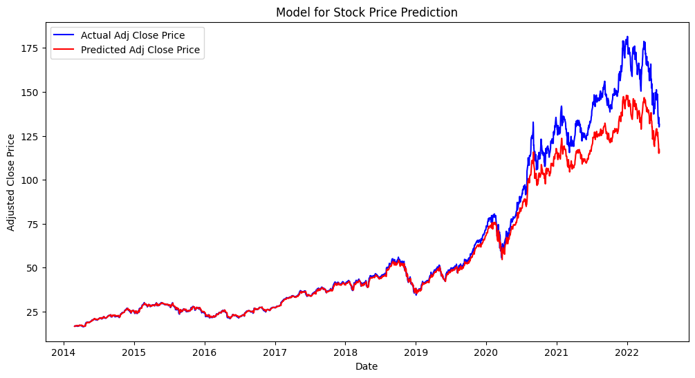

Statistical Analysis
Statistical Test on Daily Returns:
We conducted a one-sample t-test to determine whether the mean daily return is significantly different from zero. This analysis helps assess whether, over time, the stock's
returns tend to be consistently positive or negative, which is a fundamental indicator for long-term investors.
Hypotheses:
- H0: μ = 0 (Mean daily return is equal to zero.)
- Ha: μ ≠ 0 (Mean daily return is not equal to zero.)
The results showed that the p-value was less than our alpha level of 0.05, leading us to reject the null hypothesis. This means that the mean daily return is statistically
significantly different from zero. Specifically, the positive returns suggest that Apple stockholders, on average, experience a profit each day. This observation aligns with
Apple's strong historical growth trajectory, is supported by its technological leadership, loyal customer base, and consistent innovation since the beginning of the data collection in 1980.
_, p_value = stats.ttest_1samp(df['Daily Return'], 0)
p_value # 0.0036 < .05, reject H0
Machine Learning Analysis
1. Data Preparation
The adjusted closing price, which is the target variable for our prediction.
adj_close = df[['Adj Close']]
Preprocessing Data:
scaler = MinMaxScaler(feature_range=(0, 1))
scaled_data = scaler.fit_transform(adj_close)
The fit_transform method is used to fit the scaler to the adj_close data and then transform it to the scaled values.
train_data_len = int(np.ceil(len(scaled_data) * 0.8))
train_data = scaled_data[0:train_data_len, :]
Calculates and selects the first 80% of the scaled data (adj. close) for training.
2. Creating Training Data
X_train = []
y_train = []
X_train, y_train lists will store the input features and target values for the training data, respectively.
for i in range(60, len(train_data)):
X_train.append(train_data[i-60:i, 0])
y_train.append(train_data[i, 0])
The for loop iterates through the training data, creating data points for the model:
- X_train holds the previous 60 days adjusted closing prices, essentially using a 60 day window as input to the LSTM model.
- y_train holds the adjusted closing price of the current day, which is the value the model will try to predict.
X_train, y_train = np.array(X_train), np.array(y_train)
X_train = np.reshape(X_train, (X_train.shape[0], X_train.shape[1], 1))
The X_train and y_train lists are then converted into NumPy arrays. X_train is reshaped to a 3D array because it will be fed into the LSTM model (samples, timesteps, features).
3. Building and Training the Model
model = Sequential()
model.add(LSTM(units=50, return_sequences=True, input_shape=(X_train.shape[1], 1)))
model.add(LSTM(units=50, return_sequences=False))
model.add(Dense(units=25))
model.add(Dense(units=1))
Here, we create a keras model and add two LSTM layers to the model, with 50 units each. I chose LSTMs here because they work well with sequential data like time series such as this one.
model.compile(optimizer='adam', loss='mean_squared_error')
Make the model for training using the very popular and versatile Adam optimizer and mean squared error as the loss function we learned in class.
model.fit(X_train, y_train, batch_size=1, epochs=3)
Trains the model on the training data (X_train, y_train) for 3 epochs. The number of epochs is pretty arbitrary. I chose 3 epochs as it is a balance of accuracy and compute efficiency without overly underfitting or overfitting. With more time, I would fine tune this. On the other hand, batch size is more particular. I chose a batch size of 1 because time series data can change dramatically. Specifically, Apple stock price can have sudden movements based on earnings or company news. Smaller batch sizes allow this model to adapt more quickly to new information. Again, more fine tuning can be done here.
4. Testing
test_data = scaled_data[train_data_len - 60:, :]
Testing Split: Gets the data after the training set for testing.
X_test = []
y_test = adj_close[train_data_len:].values
X_test, y_test: These lists will hold the input features and adj close series for the testing data, respectively.
for i in range(60, len(test_data)):
X_test.append(test_data[i-60:i, 0])
X_test = np.array(X_test)
X_test = np.reshape(X_test, (X_test.shape[0], X_test.shape[1], 1))
Similar to what we did in the above sections, just for testing.
predictions = model.predict(X_test)
predictions = scaler.inverse_transform(predictions)
predictions: We use our trained LSTM model to make predictions on the test data. The output is the predicted adjusted closing prices, but they are still in the scaled range (0 to 1). To get the actual predictions back in the original scale, the inverse_transform is applied.
5. Visualization

Finally, let's see the results. Our model is trained on the Apple stock data to predict future Apple stock prices. This visualization of the testing set results, shows the actual stock price over time, alongside our model's predictions. Looking at the graph, it looks like our model was pretty sucessful! When the stock variance was lower, it appears our model peformed better but as it increased, our model consistenyl undershot the actual price. Some potential causes of this could be the fact our model is trained on data from 1980-2014. Not only is the stock market a very different place it was 10-40 years, but also Apple's price was also much lower. This might have been partially solved by the minmaxscaler but perhaps an alternative scaler would be better suited. It would require more testing and finetuning.
However, the prediction still captured much of the trends pretty accurately. This could be a useful first tool for newbie investors to use to make informed investment decisions.